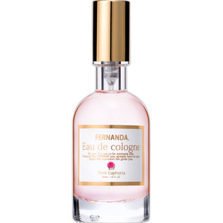

返回列表
产品名称：フェルナンダ オーデコロン ピンクエフォリア

ＦＥＲＮＡＮＤＡ ＪＡＰＡＮ フェルナンダ オーデコロン ピンクエフォリア ３０ＭＬ
メーカー ＦＥＲＮＡＮＤＡ ＪＡＰＡＮ
JANコード 4571395828075
商品の特徴
摘み取ったアップル、ラズベリーの濃厚な甘さと無邪気な酸味を存分に感じさせるフルーティーな香りに、爽やかなベルガモットのスパイスをキリッと効かせた、
愛の誘惑と刺激を感じさせる香りです。
成分・分量
エタノール、水、香料、PPG-26ブテス-26、PEG-40水添ヒマシ油、メトキシケイヒ酸エチルヘキシル、t-ブチルメトキシジベンゾイルメタン、赤504、赤227
用法及び用量
首や手首、耳の後ろ等、直射日光のあたらない場所に適量塗布してください。